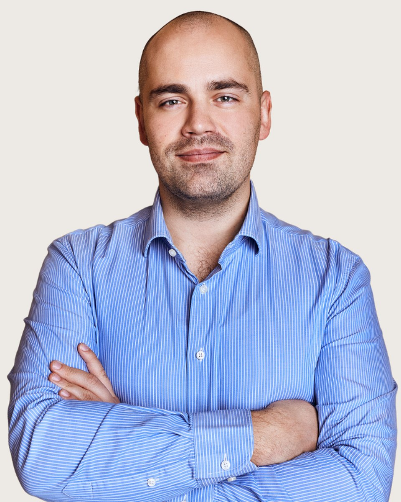

Klinikai szakpszichológus
Mikus
Róbert
Alkalmazott egészség szakpszichológus, integratív pszichoterapeuta jelölt
Fogadó kolléga: Vajas Zsuzsanna, pszichológus asszisztens. +36 30 961 1364, hétköznap 9-15. Ő segít, ha nem biztos, hogy Mikus Róbert a megfelelő választás.
Amennyiben úgy érzi, hogy az életében eljött a változás ideje, örömmel segítek a következő lépések megtételében. Mikus Róbertnek hívnak, pszichológus, coach és integratív pszichoterapeuta jelölt vagyok. 2015 óta dolgozom különböző korosztályokkal és kultúrákból érkező emberekkel, segítve őket abban, hogy megtalálják saját megoldásaikat és előre lépjenek az életük kihívásaiban. Mindezek mellett a klinikai és egészség pszichológia területén is szereztem tapasztalatot, dolgoztam nappali kórházban és pszichoterápiás osztályon, ahol mélyebb betekintést nyerhettem a mentális egészség működésébe.
A magánpraxisom Budapesten található, de hála a modern technológiának, online is elérhető vagyok a világ számos pontjáról. Munkámban az önismeret és a folyamatos fejlődés kap központi szerepet. Hiszem, hogy mindenki rendelkezik azokkal az erőforrásokkal, amelyek szükségesek a saját problémái megoldásához. Ahogy Milton H. Erickson fogalmazott: "Mindenkiben ott van a megoldás a saját problémáira, csak fel kell ismerni."
Az önismereti utazásom tíz évvel ezelőtt kezdődött, és azóta meghatározó élménye az életemnek. Saját tapasztalataimból tudom, hogy az önismeretbe fektetett idő és energia megtérül, és jelentős pozitív változásokat hoz az életben. Ezért is tartom fontosnak, hogy a klienseimet támogassam abban, hogy ők is megtapasztalhassák ezt a fejlődést.
Az elmúlt évek során különböző módszereket sajátítottam el (KIP, NLP, Ericksoni hipnózis), hogy a lehető leghatékonyabb segítséget tudjam nyújtani. Az általam alkalmazott megoldás-orientált és rendszerszemléletben a probléma elemzése mellett az "itt és most"-ra, az erőforrásokra és a célokra helyezem a hangsúlyt. Hiszem, hogy az Ön jövője a tét és a változás megvalósítható, ha megteszi az első lépést.
Amiben segítek
Mikus Róbert saját megfogalmazásában
Önismeret -Ki vagyok én? Mit szeretnék elérni az életben?
Célok kitűzése és elérése
Önértékelési problémák
Munka és magánélet egyensúlya
Motiváció Félelmek leküzdése
Hangulat javítása
Stressz csökkentés
Negatív gondolatok, érzések és viselkedés megváltoztatása
Krízis és változásmenedzsment
Gyász és veszteségek feldolgozása
Teljesítmény növelés
Hatékony kommunikáció
Érzelmi és társas intelligencia fejlesztése
Ismerkedés és párválasztás
Képzés és szakmai út
A képzések és a szupervízió az akkreditált szakképzőhely rendjében folynak. Mit jelent ez Önnek
Iskolai végzettség
Pszichoterapeuta jelölt
2024, jelenleg
SZTE Fészek Szegedi Pszichoterápiás Képzés
Alkalmazott egészségpszichológiai szakpszichológus
2021, 2024
SZTE SZAOK és BTK
Pszichológia MA (Klinikai és tanácsadó szakirány)
2014, 2016
Konstantín Filozófus Egyetem, Nyitra
Pszichológia BA
2011, 2014
Szent Erzsébet Egészségügyi és Szociális Munka Főiskola, Pozsony
Módszerspecifikus képzések
Családterápiás alapképzés
Magyar Családterápiás Egyesület
Módszerspecifkus Integratív (felnőtt) Pszichoterápia
Integratív Pszichoterápiás Egyesület
Ericksoni Hipnózis és Rövidterápia
Magyar Komplex Pszichoterápiás Egyesület
2019, 2020
The art of Change
NLP, Institute
NLP Művelő (Practitioner), NLP Mester (Master Practitioner)
2018
Egyéb képzések
Gyásztanácsadó képzés
Napfogyatkozás Egyesület
2021
Hospice alapismeretek
Gondoskodás 2000 Ápolási Szolgálat
2020
Pszichológiai és szociális segélynyújtás krízis helyzetekben az
internet által
Ipčko
2015, 2016
Mindful Team Management
VulcanicaMente
2019
Angol nyelvtanfolyam
Comenius Egyetem, Pozsony (CDV UK)
Államvizsga (C1-es szintű nyelvvizsga)
2010, 2011
Egyéb képzések
Lyra Health Hungary
Pszichológus
Rövid, fókuszált pszichológiai tanácsadás, szupportív terápia, valamint
krízisintervenció biztosítása közép- és nagyvállalatok munkavállalói számára.
2020, 2024
Pszichofészek, pszichológiai magánrendelő
Egyéni esetvezetés a rendelő kliensei részére.
2021, 2022
ELTE, Életvezetési Tanácsadó
Tanácsadó pszichológus
Egyéni életvezetési tanácsadás biztosítása az egyetem diákjai számára.
2021
EMMI Budapesti Javítóintézete
Pszichológus
Pszichológiai tanácsadás és krízisintervenció szolgáltatása fiatal fogvatartottak
részére.
2020, 2021
Vecsés és Környéke Család- és
Gyermekjóléti Szolgálat és Központ
Tanácsadó pszichológus
Pszichológiai tanácsadás nyújtása gyerekek, fiatal felnőttek és családjaik
részére.
2019, 2020
NLP Akadémia
Tréner asszisztens
NLP tréningek facilitálásában való részvétel. Bemutatók és gyakorlatok
lebonyolítása, valamint szupervízió biztosítása a résztvevők számára.
2016, 2017
OORI, Pszichoszomatikus és Pszichoterápiás Rehabilitációs Osztály,
Tündérhegy
Pszichológus gyakornok
Első interjúk készítése páciensekkel. Csoportterápiás foglalkozásokon való aktív
részvétel (szocioterápia, művészetterápia, analitikus csoport).
2015, 2016
Ipčko
Tanácsadó
Online tanácsadás, pszichológiai és szociális segélynyújtás, krízisintervenció szolgáltatása fiatal felnőttek számára.
2015, 2016
CMZ Matka
Pszichológus asszisztens
Felnőtt páciensek relaxációs csoportjainak vezetése. Kognitív funkciók
fejlesztése időseknél. Gyermek páciensek felügyelete.
Tanítómesterek
Akiknél a módszereket tanulta
- Dr. Daubner Béla, pszichiáter, kiképző pszichoterapeuta, szupervízor
- Dr. Fadgyas Ildikó, pszichiáter, addiktológus, kiképző pszichoterapeuta, szupervízor
- Dr. Barát Katalin, pszichiáter, kiképző pár- és családterapeuta, szupervízor
- Harkácsi Judit, klinikai szakpszichológus, pszichoterapeuta, szupervízor
- Molnár István, pszichológus, coach, NLP tréner
- Carl G. Jung
- Milton H. Erickson
- Feldmár András
Rólam mondták
Kliensek visszajelzései, a hozzájárulásukkal
Akkor fordultam Róberthez, amikor olyan mélyponton voltam az életemben, hogy némi egyértelműségre és útmutatásra volt szükségem. Ő pedig nagyon készséges és megértő volt. Meghallgatott, és úgy éreztem, azonnal megértette, mit keresek.
Egy érzelmi hullámvasúton találtam magam, ahol a hirtelen lelkesedés elsöprő szomorúsággá változott. Elvesztettem azt a képességemet, hogy visszatartsam a könnyeimet a nyilvánosság előtt, valamint a munkahelyen. A munkám elvesztette az értelmét, én pedig megvetően tekintettem rá. Annak ellenére, hogy rengeteg önsegítő irodalmat olvastam, egyedül nem találtam megoldást. Nem tudtam elfogadni, hogy az érzéseim és a szenvedéseim hitelesek és elfogadhatóak. Róbert segített abban, hogy jobban odafigyeljek önmagamra, és megtanuljak együttműködni magammal.
Körülbelül 2 évvel ezelőtt vettem fel a kapcsolatot Róberttel, amikor a személyes életemben bekövetkezett néhány változás miatt szükségem volt egy coachra. Nagyon hasznosnak találtam, hogy online is kapcsolatba léphettem vele, ami kényelmessé tette számomra az egész folyamatot. Szakmai és éleslátó szemlélete pedig hatékonnyá és értékessé tette az üléseket.
Lehetőségem adódott 2020 tavaszán néhány hétig dolgozni Róberttel. A konzultációk során arra összpontosítottunk, hogy az önbizalmamon dolgozzunk. Találkozásaink hasznosnak bizonyultak abban, hogy felismerjem saját értékeimet, és sokat segítettek abban, hogy jobban megértsem, melyek azok a célok, amelyeket valóban el akarok érni az életben. Érdekes technikákat is tanultam tőle az érzelmi állapotaim kezelésére, valamint arra, hogy hogyan változtassam meg a korlátozó hiedelmeimet. Róbert mindig nagyon türelmes és professzionális volt, és olyan bizalmi légkört teremtett, amely sokat segített abban, hogy nyugodtnak érezzem magam a folyamat során.
Ha inkább mást keresne
Három kolléga hasonló területekkel. A teljes regiszterben 37 szakember szűrhető.
Következő lépés
Időpont Mikus Róbertnél
Írjon nekünk, vagy hívja ügyfélszolgálatunkat hétköznap 9 és 15 óra között. Az első alkalom 50 perc, díja 18-25 ezer forint alkalmanként. Ha Mikus Róbert naptára tele van, megmondjuk, ki tud hasonló területen fogadni.